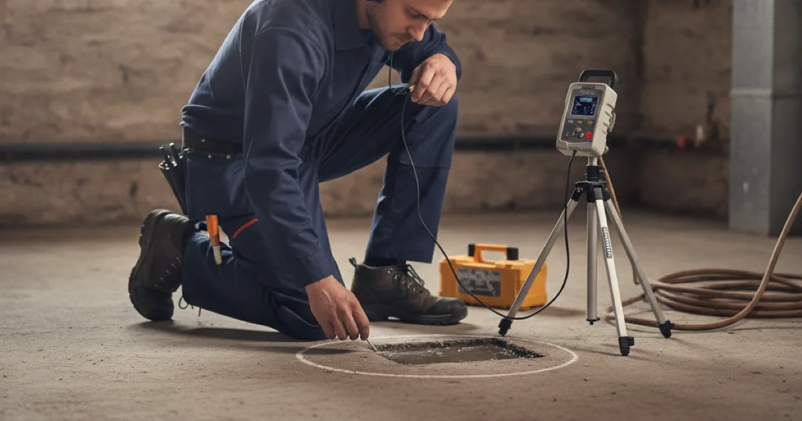

Slab Leak Repair in Westchester County, NY
Slab leaks are less common here than in parts of the country built on slab-on-grade — but where we do have concrete floors, they happen, and they hide well.
- Licensed & Insured
- Upfront Pricing
- Clean, Respectful Technicians
- Locally Owned & Operated

Where these actually happen around here
Most of the housing stock in this county has a basement or a crawlspace, which is genuinely good news — a leak under a suspended floor is far easier to reach than one under six inches of concrete. A lot of what gets written about slab leaks online is written for regions where slab-on-grade is the norm, and it does not describe most houses here.
Where we do find them locally:
- Additions and extensions built on a slab even though the original house has a basement. Very common, and the plumbing serving a new kitchen or bathroom often runs through it.
- Converted garages, where the original slab now sits under finished living space with plumbing added.
- Some post-war construction built without a full basement.
- Basement floors themselves, where a supply or waste line was run under the slab rather than overhead.
- Radiant heating loops embedded in a slab, which are their own category of problem.
We mention this because if your house has a full basement and open joists, a leak you have been told is a slab leak may well not be. It is worth confirming before anyone talks about breaking concrete.
Been told you have a slab leak?
Worth a second opinion before any concrete comes up.
How a slab leak announces itself
- A warm spot on the floor. The most distinctive sign, and it means a hot water line. Cold line leaks give no such clue.
- Sound of running water with everything shut off, seeming to come from below.
- Damp or discoloured flooring, or carpet that stays damp in one area with no source above it.
- Pressure that has dropped across the house.
- A water bill climbing steadily with no explanation.
- Cracking in the floor or wall finishes, where prolonged saturation has begun affecting the ground under the slab.
Confirming it starts the same way as any hidden leak — with meter isolation and pinpointing where the water is escaping before anyone commits to a method. On a slab that step is not optional, because the cost of opening the wrong place is measured in concrete rather than drywall.
Building Science Corporation’s material on how moisture behaves in basements and slabs is useful background if you want to understand why water under a floor behaves the way it does.
Repair options
Once it is located precisely, there is usually more than one way to deal with it, and the right one depends on the pipe, the location, and what is on top of the floor.
Spot repair. Open a small section of slab directly over the leak, repair the pipe, and re-finish. Least disruptive when the pipe is otherwise sound and the location is accessible. Not the right answer if the same line has failed before.
Reroute. Abandon the section under the slab and run a new line overhead or through walls instead. Often the better decision for older pipe, because it takes that run permanently out of the concrete. It means some patching where the new line travels, but no breaking of floor.
Repipe the affected system. Where the pipe under the slab is one of several failures, replacing the run rather than repeatedly opening the floor is the cheaper path over any reasonable period.
We will lay out which apply to your situation with honest costs and consequences. A repeated pattern of spot repairs on the same line is usually a sign the decision was deferred rather than made.
What affects the cost
A slab leak is priced on how it is reached and repaired, not on the leak itself, and we give you that before any concrete is touched. Locating it precisely first is what keeps the cost contained.
The main factors: whether a spot repair, a reroute, or a section repipe is the right approach; how much finished floor sits over the leak; and what is on top, since tile or hardwood adds restoration. A reroute often costs less in disruption than repeatedly opening a floor.
When to act rather than watch
A slab leak is not something to monitor indefinitely. Prolonged leaking under a slab can affect the ground beneath it, and a hot-water slab leak also quietly runs up the bill and the heating cost the whole time.
If you have a warm spot on the floor, unexplained damp, or a water bill climbing with no cause, it is worth confirming sooner rather than later. Catching it while it is a spot repair is far cheaper than after it has affected the floor structure.
Common questions
Do I definitely have a slab leak, or could it be something else?
Groundwater coming through a basement floor, a failed sump arrangement, or condensation can all look similar. The distinction matters enormously, because one is plumbing and the others are not. We confirm before recommending anything.
Will you have to break up the whole floor?
No. When a spot repair is the right approach, it is a contained opening over a located leak. If a large amount of floor would need opening, rerouting is usually the better option anyway.
How long does the repair take?
Locating is often the same visit. A spot repair typically follows within a day or so, plus curing time for the concrete patch. Rerouting varies with the run.
Can a slab leak damage the foundation?
Prolonged leaking can affect the ground beneath a slab, which is part of why these are worth addressing promptly rather than monitoring. Structural assessment is an engineer’s job, not ours, and we will say so if we think it is warranted.
Is it covered by insurance?
Policies vary considerably, particularly on whether they cover accessing the pipe versus repairing it. Worth asking your insurer directly — we can provide documentation of what we found.
Locate it properly first
Licensed, insured, and not breaking concrete on a guess.